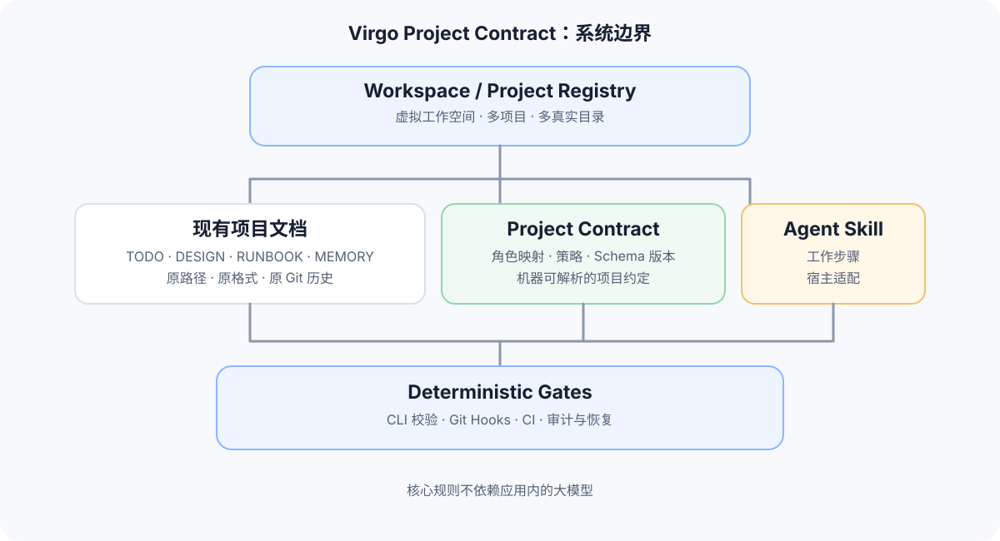
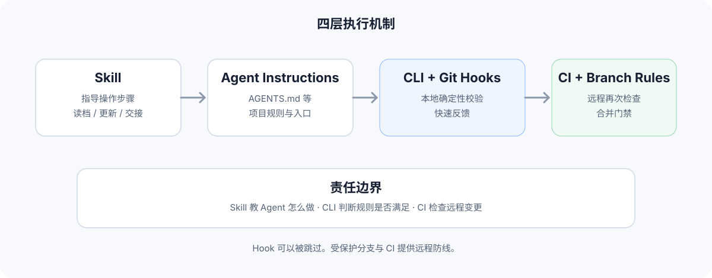
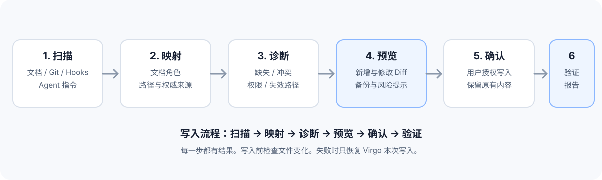
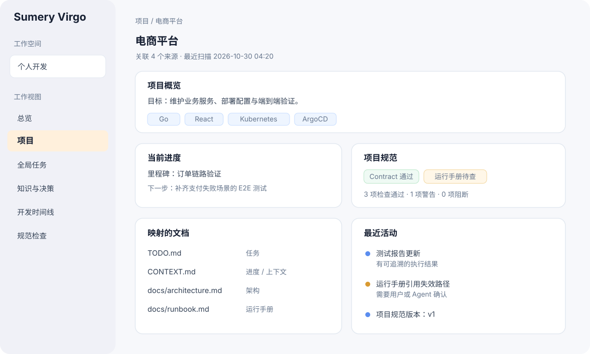

Virgo Project Contract
项目规范与 Agent 工作流
将现有 Markdown 项目文档适配为统一的项目规范。通过 Skill、Agent 指令、CLI、Git Hooks 和 CI 建立可验证的工作流程。核心检查不依赖应用内的大模型。
01. 总体目标
Virgo 以项目文件为长期事实来源。SQLite 保存可重建索引和应用状态。CLI 提供统一操作入口。桌面端负责展示与交互。
本次工作建立跨人类、AI Agent、Git Hooks 和 CI 的项目约定。项目继续使用自己的文档命名。Virgo 通过文档角色映射读取这些文档。
产品目标
- 聚合多个真实目录。
- 适配用户已有的项目文档。
- 建立可版本化的项目规范。
- 为 Agent 提供可复用的工作流程。
- 用确定性检查验证规范。
明确边界
- 核心功能不调用应用内的大模型。
- Skill 不承担强制执行职责。
- Git Hook 不承担远程安全门禁职责。
- HTML 是阅读视图，不是第二份事实源。
- 项目接管前先预览，再写入。
设计原则
- 单一事实源。每类信息必须明确权威来源。
- 增量接入。现有文件保留原路径。
- 确定性校验。相同输入应产生相同检查结果。
- 可追溯。每条检查结果包含规则 ID 与证据。
- 可恢复。Virgo 只撤销自己本次执行的写入。
- 渐进约束。先 Observe，再 Guided，最后 Enforced。
02. 现有能力与边界
Agent 开始实施前，必须先审计仓库当前实现。本文中的新命令和新配置都是设计建议。Agent 应先查找现有实现，再决定扩展位置。
审计清单
- 检查 README 与架构文档。
- 检查 CLI 命令注册方式。
- 检查 Markdown 解析与任务 ID 规则。
- 检查 SQLite schema 与索引重建流程。
- 检查 Git Hook 安装、更新和卸载逻辑。
- 检查 `todo align`、`todo scan`、`todo lint` 与 `todo reconcile` 的实际职责。
- 检查文件写入、Diff、备份和恢复机制。
- 检查当前自动化测试与 CI 工作流。
- 记录可以复用的模块。
- 记录需要新增的模块。
审计输出
Agent 必须提交一份审计报告。报告应包含文件路径、代码符号、测试名称和结论。每个实现建议都要关联到已确认的代码位置。
03. 架构模型

| 层 | 职责 | 事实来源 |
|---|---|---|
| Workspace | 虚拟分组、项目引用、真实目录映射。 | Virgo 用户级配置与 SQLite 投影。 |
| Project Contract | 项目身份、文档角色、策略和规范版本。 | 项目仓库中的 `.virgo/project.yaml`。 |
| 项目文档 | 任务、架构、进度、环境、决策和运行手册。 | 映射后的原始 Markdown 文件。 |
| Agent 集成 | 告诉 Agent 何时读取和更新项目文档。 | `AGENTS.md` 与 Skill 文件。 |
| 确定性门禁 | 验证 schema、路径、格式、交接和证据。 | CLI、Git Hooks 与 CI 检查结果。 |
架构约束
- Project 使用稳定 UUID。
- Source 使用独立 ID。
- 一个 Project 可以关联多个 Source。
- 一个 Source 可以被多个 Workspace 引用。
- 真实路径不作为项目唯一身份。
- 路径失效时保留项目记录。
- 符号链接与重复路径必须经过规范化处理。
- SQLite 索引可以从事实源重建。
04. Project Contract 规范
Contract 是机器可读的项目声明。它记录文档映射、Agent 入口和检查策略。它不保存项目全部知识。
建议文件结构
project-root/
├── .virgo/
│ └── project.yaml
├── AGENTS.md
├── TODO.md
├── CONTEXT.md
├── DECISIONS.md
└── docs/
├── architecture.md
└── runbook.md配置草案
schema_version: 1
project:
id: "stable-project-uuid"
name: "Example Project"
description: "Project purpose"
status: active
sources:
- id: "main"
path: "."
role: code
documents:
tasks:
path: "TODO.md"
progress:
path: "CONTEXT.md"
architecture:
path: "docs/architecture.md"
runbook:
path: "docs/runbook.md"
decisions:
path: "DECISIONS.md"
policy:
agent_instructions: "AGENTS.md"
skill: ".agents/skills/virgo-project-memory/SKILL.md"
enforcement: guided
checks:
require_task_reference_for_completion: true
require_test_evidence: true
require_session_handoff: trueContract 字段规则
| 字段 | 要求 | 校验 |
|---|---|---|
schema_version | 必填整数。 | 未知版本返回明确错误。 |
project.id | 稳定 ID。 | 创建后保持不变。 |
project.name | 非空字符串。 | 去除首尾空白。 |
sources[].id | 来源内唯一 ID。 | 检查重复项。 |
sources[].path | 相对或受授权的绝对路径。 | 拒绝越过授权根目录的路径。 |
documents | 角色到路径的映射。 | 检查路径存在性和可读性。 |
policy.enforcement | observe、guided 或 enforced。 | 未知值返回错误。 |
文档角色
| 角色 | 含义 | 默认要求 |
|---|---|---|
tasks | 任务与完成状态。 | 启用任务管理时必需。 |
plan | 目标、计划和里程碑。 | 推荐。 |
architecture | 系统设计和技术约束。 | 推荐。 |
progress | 当前状态、阻塞项和下一步。 | 推荐。 |
runbook | 启动、测试、部署和排障命令。 | 推荐。 |
decisions | 决策背景、方案、理由和后果。 | 推荐。 |
environment | 工具版本和环境差异。 | 推荐。 |
handoff | 最近开发会话交接。 | 严格模式必需。 |
agent_instructions | Agent 工作规则。 | 启用 Agent 规范时必需。 |
权威来源规则
- 一个字段只能有一个权威来源。
- 多个角色可以映射到同一个文件。
- 一个角色可以支持主文件和只读辅助文件。
- 任务状态以映射的任务文件为准。
- 扫描结果和环境快照属于派生数据。
- 生成的 HTML 属于展示结果。
- 冲突信息必须进入诊断结果。
05. 现有文档适配
接入流程先发现文件，再让用户确认角色。系统保留文件名、路径、内容和 Git 历史。
候选发现规则
| 候选文件 | 候选角色 | 注意事项 |
|---|---|---|
TODO.md、TASKS.md | tasks | 读取现有格式，不自动迁移。 |
PLAN.md、ROADMAP.md | plan | 计划不等于当前进度。 |
DESIGN.md、ARCHITECTURE.md | architecture | 允许文档位于 docs 子目录。 |
CONTEXT.md、STATUS.md | progress | 要求用户确认权威来源。 |
README.md | overview 或 runbook 候选 | 不能默认认定它包含完整运行手册。 |
AGENTS.md、CLAUDE.md | agent_instructions | 保留用户内容。 |
docs/** | 按路径和标题发现 | 提供候选，不自动归类为事实。 |
适配规则
- 扫描候选文件。
- 读取标题和有限的文档元数据。
- 展示角色建议。
- 让用户确认映射。
- 检测重复权威来源。
- 将映射写入 Contract。
- 运行校验器。
文件名只用于候选发现。最终角色由用户确认或项目 Contract 明确声明。
06. Skill 与 Agent 指令
Skill 目录
skills/
└── virgo-project-memory/
├── SKILL.md
├── references/
│ ├── project-contract.md
│ ├── document-roles.md
│ ├── update-policy.md
│ └── handoff-format.md
└── scripts/
├── check-project.sh
└── check-handoff.shSkill 必须覆盖的流程
- 读取 `.virgo/project.yaml`。
- 读取适用的 Agent 指令。
- 读取当前任务和验收条件。
- 读取相关架构、进度、环境和运行文档。
- 执行任务并记录真实验证结果。
- 更新受影响的权威文档。
- 记录未解决问题和下一步行动。
- 运行 `todo contract check`。
- 生成交接摘要。
受管理的 Agent 指令区块
<!-- BEGIN VIRGO MANAGED RULES -->
## Virgo Project Memory
Before work:
1. Read `.virgo/project.yaml`.
2. Read the mapped source documents.
3. Identify task scope and acceptance criteria.
Before handoff:
1. Update affected source documents.
2. Record actual verification results.
3. List unresolved issues.
4. Run `todo contract check`.
5. Report changed files and next steps.
Review diffs before writing managed files.
Keep user-owned instructions intact.
<!-- END VIRGO MANAGED RULES -->安装规则
- 文件不存在时，生成初始文件。
- 文件存在时，只维护 Virgo 标记区块。
- 区块已经存在时，执行幂等更新。
- 文件存在冲突时，显示 Diff 并请求确认。
- 安装失败时，保留原文件。
- 卸载时，只删除 Virgo 管理区块。
- 针对不同 Agent 宿主提供单独适配文件。
07. Git Hooks 与 CI 门禁

| 检查项 | 本地 Hook | CI | 说明 |
|---|---|---|---|
| Contract schema | 执行 | 执行 | 确定性检查。 |
| 映射路径存在 | 执行 | 执行 | 按仓库可见范围检查。 |
| 任务格式与 ID | 执行 | 执行 | 复用现有 lint。 |
| 交接记录字段 | 按策略执行 | 按策略执行 | 严格模式可阻断。 |
| 代码变更与文档关联 | 提示或阻断 | 按策略复核 | 允许记录无需更新的理由。 |
| 架构决策合理性 | 不做语义裁决 | 不做语义裁决 | 由人类审查或外部 Agent 完成。 |
| 运行手册准确性 | 执行声明的命令 | 执行安全的验证任务 | 以命令结果为证据。 |
三种执行策略
Observe
只观察扫描并报告问题。检查不阻止提交。
Guided
默认策略提供建议。非关键检查以警告方式呈现。
Enforced
严格门禁仅对项目明确启用的规则阻止提交或合并。
Hook 安装要求
- 检测现有 `core.hooksPath`。
- 检测现有 pre-commit 与 pre-push 脚本。
- 保留原有 Hook 内容。
- 采用独立入口或明确的链式调用。
- 安装前显示 Diff。
- 记录安装来源和版本。
- 提供验证、升级和卸载命令。
本地 Hook 可以被绕过。CI 必须重新执行强制规则。远程合并门禁依赖仓库保护规则。
08. 项目接管向导

步骤
- 扫描。发现文档、Git 状态、Agent 指令、Hook 和项目配置。
- 映射。让用户确认文档角色和权威来源。
- 诊断。标记缺失文件、重复来源、路径失效和配置冲突。
- 生成提案。只为缺失的能力提出新文件或追加区块。
- 预览。展示所有文件新增、修改、删除和权限变化。
- 备份与确认。检查未提交改动，再执行用户授权的写入。
- 安装与验证。安装所选集成并运行校验器。
- 报告。输出接管结果、未解决问题和回滚信息。
安全要求
- 扫描阶段只读。
- 写入前再次检查文件哈希。
- 文件发生并发变化时停止写入。
- 备份只包含 Virgo 即将修改的内容。
- 恢复操作只撤销本次 Virgo 写入。
- 保留用户未提交的修改。
- 记录每次写入的文件路径、哈希和结果。
09. 文档健康检查
每条检查必须返回稳定的规则 ID、级别、证据路径、简短说明和修复建议。
| 规则 ID | 检查内容 | 默认级别 |
|---|---|---|
VPC001 | Contract schema 无效。 | 错误 |
VPC002 | 文档映射路径不存在。 | 错误或警告 |
VPC003 | 角色缺少权威来源。 | 警告 |
VPC004 | 同一字段声明多个权威来源。 | 警告 |
VPC005 | Agent 指令引用的 Skill 不存在。 | 警告 |
VPC006 | 运行手册引用的脚本不存在。 | 警告 |
VPC007 | 严格模式要求的交接记录缺失。 | 错误 |
VPC008 | 验证证据缺少命令或结果。 | 按策略处理 |
VPC009 | 受影响文档需要复核。 | 提示 |
规则 ID 必须稳定。自动化测试应覆盖每条规则的通过、警告和失败场景。
10. 项目环境快照
采集范围
- Git 分支、提交 SHA 和工作区状态。
- 工具版本与声明的版本约束。
- 依赖清单文件的路径与内容哈希。
- Docker Compose 服务名称、端口和依赖关系。
- 用户授权范围内的 Kubernetes 上下文标识。
- 启动、构建和测试命令。
- 最近一次验证时间、命令和结果。
敏感数据规则
- 只记录环境变量名称。
- 不记录环境变量敏感值。
- 不读取 Secret 的明文内容。
- 不自动导出云平台令牌。
- 采集 Kubernetes 信息前要求用户授权。
- 对命令输出执行敏感信息过滤。
事实与推断分离
| 信息 | 类型 | 例子 |
|---|---|---|
| 项目声明 Node 版本 | 声明事实 | 读取 package.json 的 engines 字段。 |
| 当前终端 Node 版本 | 运行事实 | 执行 node --version。 |
| 推荐升级 Node 版本 | 建议 | 显示为建议，不自动改文件。 |
11. 虚拟工作空间
Workspace 管理逻辑分组。Project 管理项目身份。Source 指向真实目录。

交互要求
- 支持创建虚拟 Workspace。
- 支持添加多个真实目录。
- 支持将多个仓库关联到一个逻辑项目。
- 支持将一个 Source 引用到多个 Workspace。
- 显示路径失效状态。
- 显示 Git 工作区状态。
- 显示文档映射与规范检查结果。
- 支持只读来源。
- 扫描操作可取消。
- 重复添加时显示去重依据。
项目页面信息区
概览
项目目标、技术栈、状态和来源。
进度
当前里程碑、下一步、阻塞项和最近更新。
文档
角色映射、路径、更新时间和来源。
规范
Contract 版本、检查结果、Skill 与 Hook 状态。
环境
工具版本、启动命令、测试命令和验证结果。
时间线
任务变化、Git 提交、测试与接管事件。
12. CLI 设计
以下命令为候选设计。Agent 必须先检查现有命令树。新命令必须复用现有 CLI 框架、错误格式和日志规范。
# 扫描项目并预览接管方案
todo project adopt --dry-run
# 查看项目映射和规范状态
todo project inspect
# 检查规范、路径和规则
todo contract check
# 生成 Agent 开始工作时的指令
todo contract prompt --phase start
# 生成 Agent 结束工作时的交接清单
todo contract prompt --phase finish
# 预览规范升级
todo contract upgrade --dry-runCLI 输出约定
- 成功输出稳定的机器可读结果。
- 错误输出稳定错误码。
- 支持 JSON 输出。
- 支持非交互模式。
- 交互式写入必须要求明确确认。
- CI 模式不得等待交互输入。
- 退出码必须区分通过、警告和失败。
建议退出码
| 退出码 | 含义 |
|---|---|
0 | 所有阻断规则通过。 |
1 | 至少一条阻断规则失败。 |
2 | 参数或配置无效。 |
3 | 文件系统或权限错误。 |
4 | 检测到并发修改，写入已停止。 |
13. 分阶段实施计划
阶段 0 · 仓库审计
- 输出当前架构图。
- 列出可复用的 CLI、Hook 和文件写入模块。
- 列出当前测试覆盖范围。
- 形成差距分析。
阶段门禁 审计报告必须包含真实文件路径和测试证据。
阶段 1 · Project Contract
- 定义 schema v1。
- 实现解析和校验。
- 定义文档角色。
- 实现路径安全检查。
- 添加单元测试与样例项目。
阶段门禁 有效配置通过。无效配置返回可定位的错误。
阶段 2 · 项目接管
- 实现候选文档扫描。
- 实现角色映射预览。
- 实现 Diff 和备份。
- 实现并发修改检测。
- 实现写入与恢复。
阶段门禁 接管流程不会覆盖未确认的用户内容。
阶段 3 · Skill 与 Agent 适配
- 编写标准 Skill。
- 编写通用 Agent 指令区块。
- 实现幂等安装和卸载。
- 为选定宿主提供适配文档。
- 测试已有自定义指令文件的情况。
阶段门禁 重复安装不产生重复区块。
阶段 4 · CLI、Hooks 与 CI
- 增加 Contract 检查命令。
- 增加 JSON 输出。
- 集成现有 Hook 安装器。
- 增加 CI 示例工作流。
- 测试 Hook 被跳过时的远程门禁。
阶段门禁 CI 能独立执行全部启用的强制规则。
阶段 5 · 桌面端总览
- 增加 Workspace 视图。
- 增加 Project 详情页。
- 增加文档映射界面。
- 增加规范健康检查视图。
- 增加环境快照和活动时间线。
阶段门禁 UI 数据来自真实扫描与 Contract，不使用硬编码状态。
14. 自动化验收
Agent 必须为每条验收条件编写自动化测试。人工截图不能代替自动化测试。
勾选状态仅保存在当前页面内存中。刷新页面后会重置。
必须执行的端到端场景
- 创建一个已有多份文档的临时仓库。
- 运行接管预览。
- 确认文档映射。
- 安装 Skill 和 Hook。
- 修改一个受规则管理的文件。
- 执行 Contract 检查。
- 制造一个路径失效问题。
- 确认检查失败并显示证据。
- 恢复路径。
- 提交一项违反强制规则的变更。
- 验证本地 Hook 阻止提交。
- 绕过本地 Hook。
- 验证 CI 仍然失败。
15. 交付物清单
Agent 最终报告格式
## 实施结果
- 已完成：
- 未完成：
- 受影响文件：
- 新增命令：
- 新增规则：
## 验证证据
- 测试命令：
- 测试结果：
- E2E 场景：
- CI 结果：
## 风险
- 已知限制：
- 需要人工决策：
- 回滚方式：
## 兼容性
- 现有文档是否保留：
- 现有 Hook 是否保留：
- SQLite 是否可重建：
- 是否引入模型运行时：附录 A · Agent 执行提示
可直接交给实现 Agent 的任务说明
你负责在 `lens077/ToDo` 仓库中实施 Virgo Project Contract。
- 先审计仓库代码和测试。
- 输出审计报告。
- 确认现有 CLI、Hook、SQLite 和文件写入架构。
- 提出最小改动计划。
- 实现 Contract schema 与校验器。
- 实现项目接管流程。
- 实现 Skill 和 Agent 指令区块管理。
- 集成 CLI、Hook 和 CI。
- 按验收清单补充自动化测试。
- 执行测试并记录真实输出。
- 更新开发文档。
- 提交最终实施报告。
每次只执行一个可验证阶段。每个阶段完成后运行相关测试。发现现有实现与本文不一致时，先记录差异，再选择兼容现有架构的实现方案。
所有破坏性文件操作都必须先显示 Diff。所有外部命令都必须检查退出码。所有强制规则都必须具备 CI 测试。
附录 B · 明确不在本次范围内
- 在 Virgo 内部运行大模型。
- 自动替用户决定架构方案。
- 强制迁移全部 Markdown 文件。
- 将 HTML 作为第二份权威数据源。
- 自动读取云平台 Secret。
- 无确认地覆盖现有 Hook。
- 将所有项目强制使用同一套文档命名。
- 把 AI 自述作为任务完成证据。
附录 C · 交付前检查
- 所有链接都能在本地 HTML 中打开。
- 所有 SVG 素材均包含在 ZIP 中。
- HTML 在无网络环境下可正常阅读。
- 页面支持窄屏布局。
- 打印样式隐藏导航栏。
- 页面没有依赖外部字体或 CDN。
- 所有设计候选均明确标记为待实现内容。